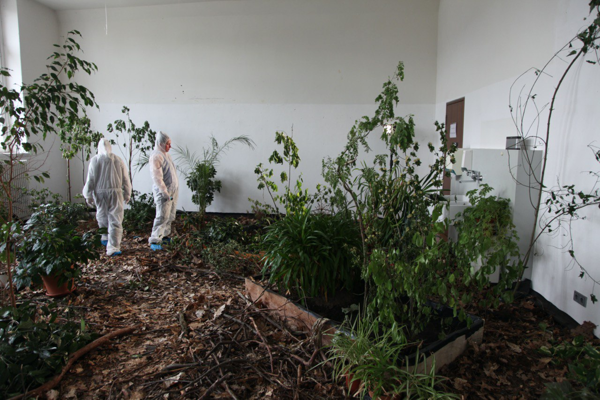

Störung
Experiment, HfBK Dresden, Dresden 2018
Im Sommersemester 2018 startete der Studiengang Bühnen- und Kostümbild ein Experiment. Ziel des Experiments war es, bestehende Lehrangebote und Lernerwartungen im Austausch zwischen Studierenden und Lehrenden zu hinterfragen um zukünftig andere Strukturen zu etablieren. Dabei wurden die Klassenstrukturen aufgelöst und jahrgangs- übergreifende Interessengruppen gebildet. Die Gruppe „Natur“ baute ein großes Biotop in einem der Atelierräume auf und lud Besuchende ein, rund um den Begriff Natur ins Gespräch zu kommen. Außerdem wurde zu Achtsamkeitsübungen sowie zum Picknick ins Biotop eingeladen. Zusätzlich wurde der Raum als Bühne genutzt, um zusammen mit Meg Stuart performative Mittel zu untersuchen.
- 